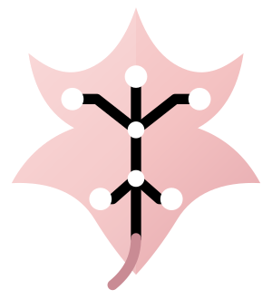
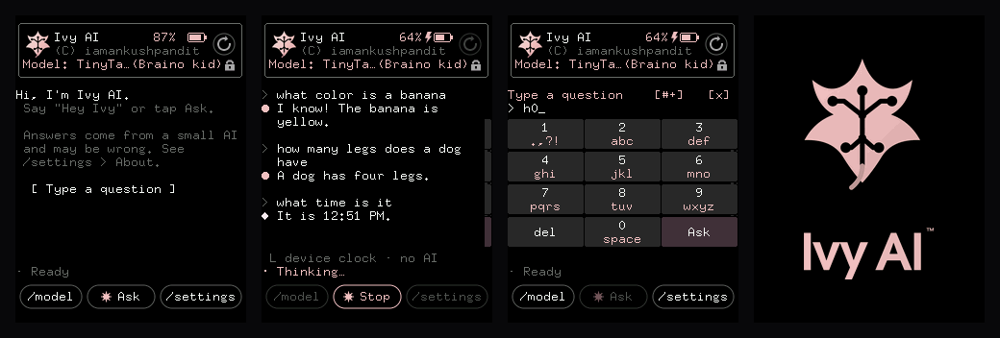

A voice assistant that listens, thinks and speaks entirely on a microcontroller.
No network. No server. No phone. Say “Hey Ivy”, ask a question, and a $20 ESP32-S3 transcribes your speech, runs a language model and answers out loud — on the chip.

Four stages, each on the device. Wi-Fi is used for exactly one thing: setting the clock.
mic → [LISTEN: energy VAD] → [TRANSCRIBE: conformer CTC]
→ [THINK: 19.7M-parameter LLM, 4-bit] → [SPEAK: SVOX Pico] → speaker
WakeNet9 listens for “Hey Ivy” even while asleep. A conformer CTC model then transcribes open-vocabulary English, streamed from the SD card.
TinyTalk 2 8M — 19.7M parameters at 4 bits — or any llama.cpp GGUF file you drop on the card.
SVOX Pico synthesises 16 kHz audio through the onboard codec and speaker, with adjustable voice gain.
Time, date, timers and identity are answered by plain C, not the model — and the screen says which answered.
Every figure below was taken on the physical board, not calculated.
| Model | Size | Speed | What it’s for |
|---|---|---|---|
| TinyTalk 2 8M v7 | 6.5 MB | 5.9 tok/s | answering questions |
| delphi 6.4m (GGUF) | 3.8 MB | 7.3 tok/s | storytelling |
| stories15M (GGUF) | 5.5 MB | 7.3 tok/s | storytelling |
| stories260K (GGUF) | 1.1 MB | 30 tok/s | raw speed |
Speed is memory-bound — every token reads every weight — so halving the model roughly doubles the rate. Getting a 6.5 MB model to run at all takes 4-bit weights with int8 activations, a hand-written ESP32-S3 SIMD kernel, and the matrix work split across both cores.
The board has 8 MB of PSRAM. Speech recognition wants 5.4 MB and the language model wants 6.5 MB, which does not fit — until they stop overlapping.
# build and flash
powershell -File tools/idf.ps1 -p COM22 flash
# put the models, speech data and voices on the SD card
python tools/sd_put.py --manifest
# ask it something over the serial console
python tools/serial_cmd.py "ask what is half of twelve"The UI, the memory arenas and the language models all build and run on a PC too, so most of the work needs no hardware at all.
Worth saying plainly, because a 19.7M-parameter model is small.